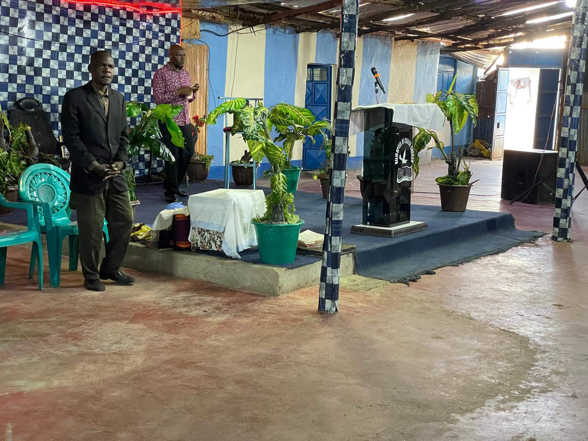
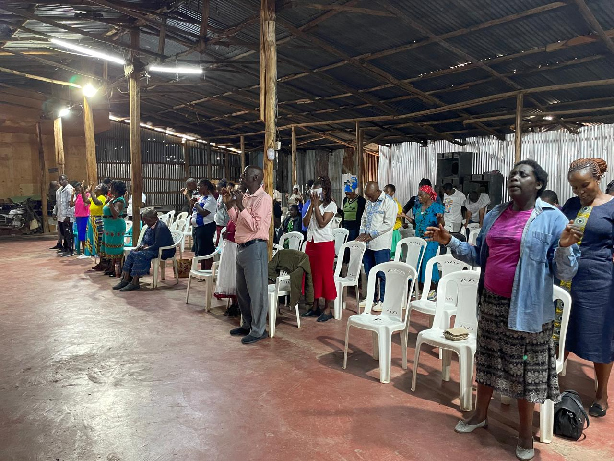
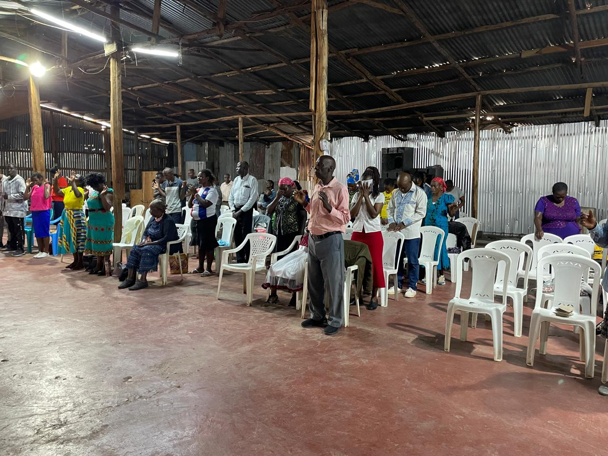
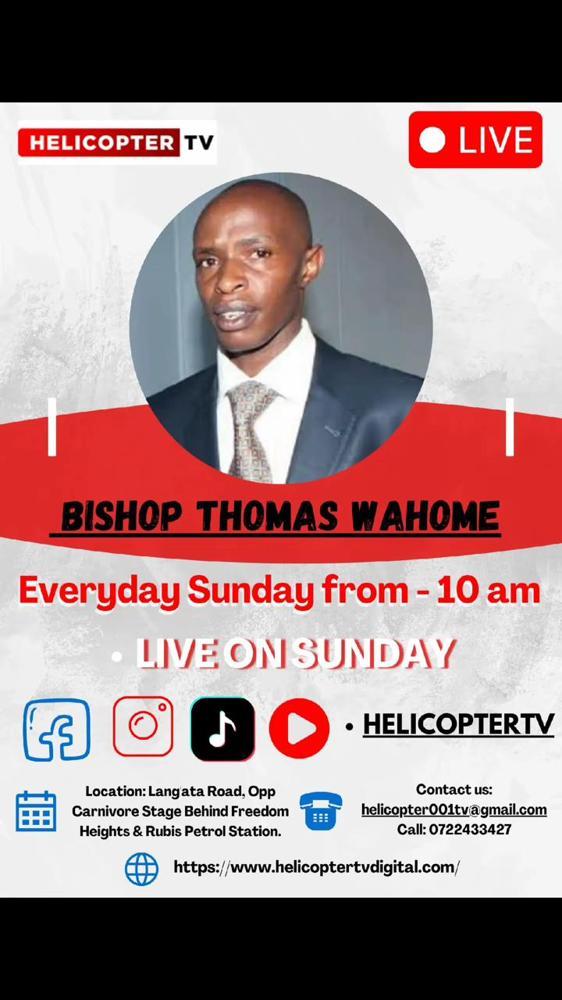
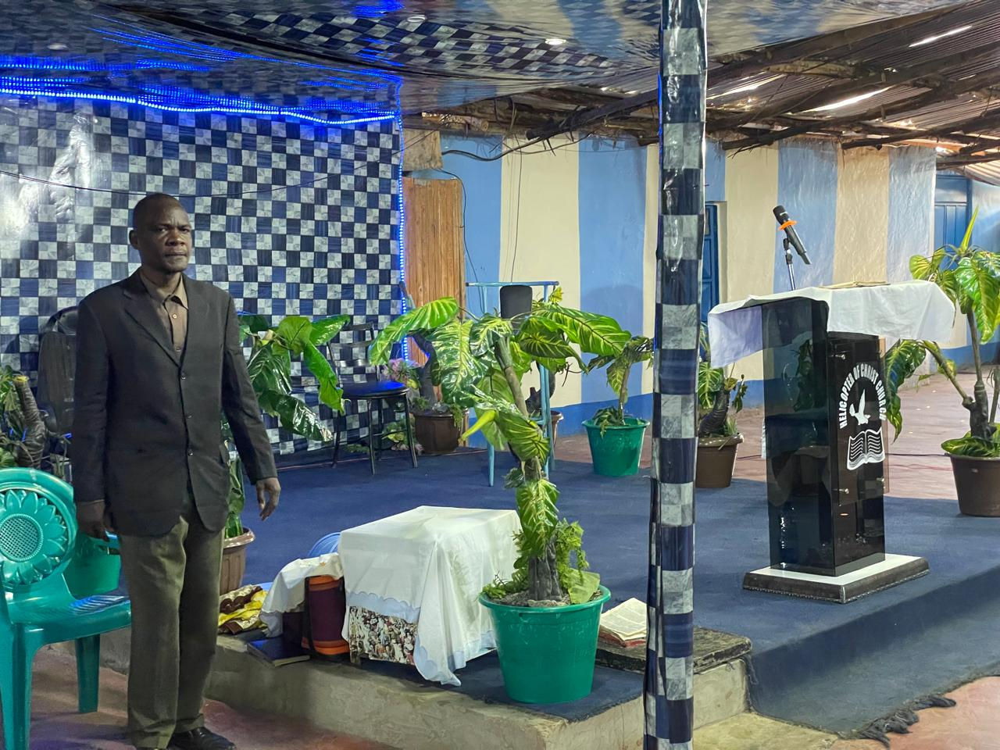

About Helicopter Church
Helicopter of Christ Church Kenya is a ministry committed to prayer, preaching, prophecy, healing, deliverance, and community outreach. The church is based in Langata and records its services to reach more people through Helicopter TV.
Church Details
Church: Helicopter of Christ Church Kenya
Leader: Prophet Thomas Wahome
Location: Langata, Carnivore opposite Freedom Heights
Focus: Prayer, prophecy, healing, deliverance, crusades, and recorded services
Bishop Biography
A short and clear summary of Prophet Thomas Wahome’s life and ministry journey.
Prophet Thomas Wahome began showing signs of a spiritual calling at a young age. As a child, he repeatedly dreamed of being in a river catching many fish. His family later understood these dreams as signs of a prophetic calling, with the fish symbolizing people and the river representing the Holy Spirit and future ministry work.
In his younger years, he drifted away from church and became a DJ in Othaya, later known as DJ Fujo. Over time, he realized that God was calling him into ministry.
In 2000, he moved to Nairobi and worked as a watchman while praying at night. During that period, the vision for ministry became stronger, and he later founded Helicopter of Christ Church Kenya. The ministry began in Kahawa West, later moved to Kayole, Shauri Moyo, Nairobi town at Uyoma Street Bus Station, Mukuru kwa Ruben, and finally to the Langata Sanctuary in 2016.
Today, Prophet Thomas Wahome is known for prayer, prophecy, healing, deliverance, and crusades that have drawn many people over the years. In 2021, the ministry expanded into media through the launch of Helicopter TV, allowing church services and ministry programs to reach a wider audience.
Church Photo Gallery
View moments from services, worship, and church events.





Sunday Services
Join our Sunday worship services for prayer, preaching, prophecy, praise, and spiritual encouragement as the church continues to minister to people in Langata and beyond.
Recorded Services
Helicopter Church records its services and ministry events so that teachings, prayer sessions, and church programs can reach people through Helicopter TV and other media platforms.
Healing and Deliverance Ministry
The church is known for strong prayer meetings, crusades, deliverance services, and prophetic ministry. Many followers have shared testimonies of healing, freedom, restoration, and spiritual encouragement through the ministry.
Ministry Impact
Through church services, crusades, recordings, and media outreach, Helicopter Church continues reaching many people with prayer, prophecy, encouragement, and the message of Christ.